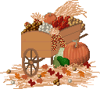 Welcome!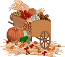 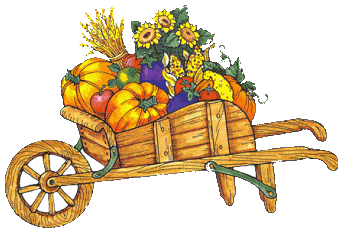 'Tis the season of harvest and giving Thanks for all we've recieved over the past year! I give Thanks that myself and my family have been relatively healthy. I Thank my Lord that we've had plenty of food, and a warm home to live in. 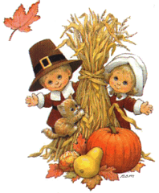 I Thank Him that we're together and not seperated and spread all over the continent! 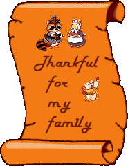 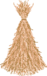 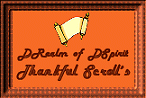 And thank you for wonderful friends!! 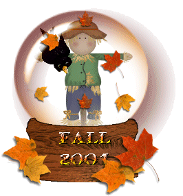 Thanks Fairy Bumble Bee! Another beautiful graphic! 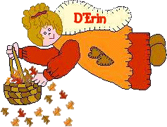 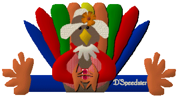 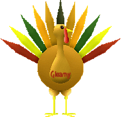 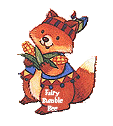 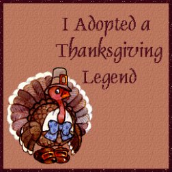 |